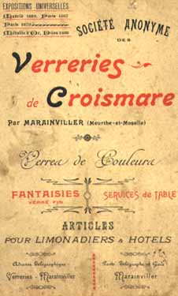
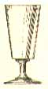 |
Designation : named as comme Bock (Beer glass) ; as absinthe glass or vermouth glass. Dénomination donnée : nommé comme Bock (verre à bière) et comme verre à absinthe et vermouth. Poid donné : 300 et 350 gr. Contenance donnée : 18 à 25 cl en tant que bock. Autre : peut être uni ou taillé à côtes plates avec ou sans 1 ou deux rangs de pontils (petits pastillages). |
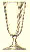 |
Designation : named as comme Bock (Beer glass) ; as absinthe glass or vermouth glass. Dénomination donnée : nommé comme Bock (verre à bière) et comme verre à absinthe et vermouth. Poid donné : 300 et 350 gr. Contenance donnée : 18 à 25 cl en tant que bock. Autre : peut être uni ou taillé à côtes plates avec ou sans 1 ou deux rangs de pontils (petits pastillages). |
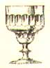 |
Designation : named as absinthe glass or vermouth glass. Dénomination donnée : nommé comme verre à absinthe et vermouth. Contenance donnée : la contenance n'est pas donnée, cette dernière est certainement la même pour tous les modèles de verre à Absinthe et devait être évidente à l'époque. Autre : peut être uni ou taillé à côtes plates avec ou sans olives (gros pastillages ovales). un filet marquant la dose peut être ajouté. modèle trés rare. |
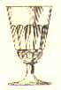 |
Designation : named as absinthe glass or vermouth glass. Dénomination donnée : nommé comme verre à absinthe et vermouth. Contenance donnée : la contenance n'est pas donnée, cette dernière est certainement la même pour tous les modèles de verre à Absinthe et devait être évidente à l'époque. Autre : peut être uni ou taillé à côtes plates avec ou sans olives (gros pastillages ovales). un filet marquant la dose peut être ajouté. |
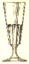 |
Designation : named as absinthe glass; vermouth glass or "Chope Yvonne". Dénomination donnée : nommé comme verre à absinthe et vermouth ou choppe Yvonne. Poid donné : 400 à 500 gr pour la chope Yvonne. Contenance donnée : entre 22 et 40 cl pour la choppe Yvonne. Autre : peut être uni ou taillé à côtes plates avec ou sans olives (gros pastillages ovales). un filet marquant la dose peut être ajouté. Commentaire :La chope Yvonne est un classique de la plupart des verreries. C'est un verre multi usages. |
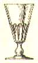 |
Designation : named as absinthe glass or vermouth glass. Dénomination donnée : nommé comme verre à absinthe et vermouth. Contenance donnée : la contenance n'est pas donnée, cette dernière est certainement la même pour tous les modèles de verre à Absinthe et devait être évidente à l'époque. Autre : peut être uni ou taillé à côtes plates avec ou sans olives (gros pastillages ovales). un filet marquant la dose peut être ajouté. modèle peu courant que l'on rencontre surtout dans l'Est de la France. trés agréable à voir, vraiment large (souvent trop large pour les cuillères à Absinthe) |
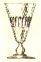 | Designation : named as absinthe glass or vermouth glass. Dénomination donnée : nommé comme verre à absinthe et vermouth. Contenance donnée : la contenance n'est pas donnée, cette dernière est certainement la même pour tous les modèles de verre à Absinthe et devait être évidente à l'époque. Autre : peut être uni ou taillé à côtes plates avec ou sans olives (gros pastillages ovales). un filet marquant la dose peut être ajouté. |
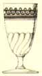 |
Designation : named as swirl egg glass. Dénomination donnée : article proposé en série, nommé oeuf torse (certainement pour restaurants et bistros). Contenance donnée : la série comporte 6 tailles différentes. Autre : peut être uni, taillé perles ou guilloché. un des modèles de verre le plus courant, il sera utilisé en verre multi usages jusqu'en 1940. |
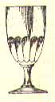 | Designation : named as absinthe egg glass. Dénomination donnée : nommé verre à Absinthe oeuf. Autre : peut être uni, taillé à côtes plates, taillé écaille ou taillé geneviève (côtes plates avec taille suplémentaire horizontale entre les côtes). modèle de verre proposé par la plupart des verreries dans la version uni. |
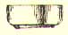 | Dénomination donnée : verse eau uni. |